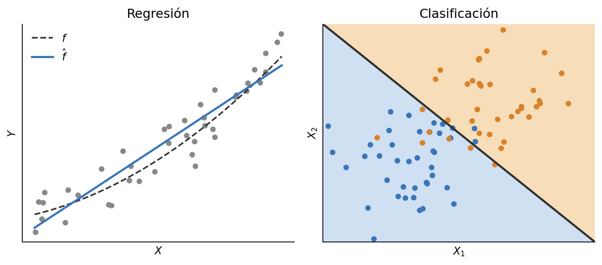

1 Aprendizaje Automático
El aprendizaje automático (machine learning) es una rama de la inteligencia artificial (IA) que desarrolla técnicas para que las computadoras aprendan a realizar tareas sin haber sido explícitamente programadas con ese fin. Es decir, no es necesario programar reglas ad hoc para cada tarea que queramos abordar, sino que existen mecanismos a partir de los cuales las computadoras pueden generar esas reglas de manera automática. Evidentemente, las computadoras no pueden hacer eso sin ningún insumo específico, y en este caso el principal insumo van a ser los datos.
Existen varios tipos de aprendizaje dentro del aprendizaje automático. En este texto solamente nos concentraremos en el supervisado y el no supervisado. El aprendizaje supervisado es aquel que permite modelar la relación entre algunas características medidas y una etiqueta asociada, a partir de un conjunto de ejemplos en los que la etiqueta es conocida. De acuerdo al tipo de etiquetas que asociamos a los datos, el modelo puede realizar dos tipos de tareas: clasificación o regresión. En clasificación, las etiquetas son categorías. En las tareas de regresión, las etiquetas son cantidades numéricas.
El aprendizaje no supervisado, a diferencia del aprendizaje supervisado, busca obtener relaciones y patrones en los datos sin hacer uso de etiquetas. Las dos tareas más importantes dentro del aprendizaje no supervisado son clustering y reducción de dimensionalidad. Las técnicas de clustering, como su nombre lo indica, identifican grupos (clusters), donde los elementos de cada grupo se parecen más entre sí que con los elementos de los otros grupos. Hay muchas técnicas de clustering, y cada una tiene su propia forma de entender qué es “parecerse más entre sí” (similitud). Las técnicas de reducción de dimensionalidad sirven para obtener representaciones más concisas de los datos, pasando de un espacio de alta dimensión a un espacio de baja dimensión.
Vamos a empezar con el aprendizaje supervisado.
1.1 Aprendizaje supervisado
Esta sección está basada, principalmente, en (James et al. 2013).
En la sección anterior dijimos que el aprendizaje supervisado es una rama del aprendizaje automático que permite modelar la relación entre algunas características y una etiqueta asociada, a partir de un conjunto de ejemplos en los que la etiqueta es conocida. Vamos a tratar de darle un poco de forma a esa definición, y para ello conviene pensar en un proceso típico de aprendizaje supervisado, de manera ligeramente simplificada.
Comenzamos con un conjunto de datos. El conjunto de datos está compuesto de diferentes características medidas sobre cierto número de instancias u observaciones. En general, una de esas características será la que queramos predecir, por lo que la llamaremos variable objetivo o etiqueta (también pueden llegar a encontrar target o output), mientras que las otras características serán las variables que usaremos para predecir, por lo que las llamaremos atributos (features) o variables predictoras (inputs).
Una vez que tenemos un conjunto de datos, y sabemos cuáles son los atributos y cuál es la etiqueta, podemos entrenar un modelo. El modelo es una estructura flexible cuyas reglas o asociaciones entre los atributos y la etiqueta se ajustan a partir de pares atributos-etiqueta (es decir, el conjunto de datos). Esas reglas serán las que luego le permitirán predecir la etiqueta de nuevas instancias, de las cuales solamente conocemos los atributos. Si el modelo predice de manera apropiada o no es un tema muy importante, que veremos en Evaluación de modelos.
El entrenamiento tiene unas características comunes a (casi) todas las familias de modelos que existen. Para ser flexibles, los modelos tienen que tener parámetros o estructuras que podamos ajustar o modificar según nuestra necesidad. Pero ese ajuste hay que hacerlo de forma automática, por lo que necesitamos dos cosas:
Una función de costo: para entrenar un modelo, se debe optimizar una función de costo. Esta función de costo compara las predicciones del modelo con las etiquetas. La función de costo guía el entrenamiento, es la que informa al optimizador cuán bien o mal está andando el modelo; es decir, cuán bien está prediciendo esas etiquetas.
Un optimizador: el optimizador es el que va modificando los parámetros del modelo para que vaya mejorando su desempeño, medido según la función de costo. Existen muchos tipos de optimizadores, algunos asociados a funciones de costo específicas, y más de una forma de optimizar una misma función de costo.
1.1.1 Un poco de formalismo
Al conjunto de variables predictoras se lo suele llamar \(X\). En los ejemplos pedagógicos, generalmente nos limitamos a unas pocas variables (podemos visualizar dos o tres variables como mucho), pero cosas interesantes suceden cuando son muchas. La etiqueta se suele denotar con la letra \(Y\), independientemente de si es una variable continua o categórica. Entonces, en el contexto de aprendizaje supervisado asumimos que existe una relación entre \(X\) e \(Y\) que podemos representar como
\[ \begin{array}{ccc} & \text{ruido} & \\ & \downarrow & \\ X & \xrightarrow{\quad \textstyle f \quad} & Y \end{array} \]
\(f\) representa la relación que existe entre \(X\) e \(Y\), y es precisamente lo que buscamos modelar. Esta relación es, en principio, desconocida para nosotros, y puede tomar muchas formas distintas. No es necesario ni siquiera que sea causal, ya que puede simplemente tratarse de asociaciones. Tampoco es necesario que sea determinista. Probablemente haya variables que influyen sobre \(Y\) que no observamos, y que nosotros vamos a considerar como ruido en los datos.
Lo mejor que podemos hacer es aproximar \(f\), y eso es lo que hace el modelo. Cuando obtenemos un modelo de \(f\), lo denotamos \(\hat{f}\), para indicar que no es la relación que existe en la naturaleza, sino la que nosotros obtuvimos a partir de los datos. Y lo que sale de \(\hat{f}\) tampoco es \(Y\), sino una estimación que denotamos \(\hat{Y}\):
\[X \xrightarrow{\quad \textstyle \hat{f} \quad} \hat{Y}\]
Notar que a \(\hat{f}\) le entra una sola cosa, los predictores. El ruido, por definición, no fue medido, por lo que no puede entrar al modelo. Por ese y otros motivos, en general \(\hat{Y}\) no va a coincidir exactamente con \(Y\), por más bueno que sea el modelo.
¿Cómo se relaciona lo que acabamos de ver con los conceptos de función de costo y optimizador que mencionamos anteriormente? La relación es directa:
- El optimizador produce \(\hat{f}\).
- La función de costo compara \(\hat{Y}\) con \(Y\).
- Cuando decimos que el optimizador ajusta los parámetros hasta que el modelo prediga bien, y luego hablamos de aproximar \(f\), estamos diciendo lo mismo de dos formas distintas.
1.1.2 Clasificación y regresión
Dijimos anteriormente que existen dos grandes tareas dentro del aprendizaje supervisado: clasificación y regresión. En clasificación, las etiquetas son categorías, mientras que en regresión son cantidades numéricas. Ahora que contamos con un poco más de contexto, ¿cuáles son los casos más sencillos que podríamos resolver? En la Figura 1.1, a la izquierda, se puede ver un problema de regresión con un solo predictor \(X\). \(f\) es la relación que existe entre \(X\) e \(Y\), que nosotros desconocemos, mientras que \(\hat{f}\) es el modelo obtenido.
Para clasificación, el caso con un solo predictor también es sencillo, pero es un poco más claro si vamos al caso con dos predictores, \(X_1\) y \(X_2\). Cada punto en el plano es un dato medido, y el color indica su etiqueta. En este caso, lo que hace el modelo es generar una frontera de decisión que separa una clase de la otra. De manera equivalente, pintamos el espacio del color de cada clase, y donde cambia de color es la frontera.
En resumen, clasificar es encontrar una frontera de decisión, y hacer una regresión es encontrar una curva que pase lo más cerca posible —cuantificado de alguna forma— de los datos.
1.1.3 Predicción e inferencia
¿Cuáles son los principales usos de estos modelos? Es decir, ¿para qué queremos estimar \(f\)? El primer caso de uso es la predicción. Una vez que obtenemos un modelo, se puede usar para predecir la etiqueta de instancias nuevas. Esto es particularmente útil cuando obtener los predictores \(X\) es fácil, pero no así las etiquetas. Entonces, podemos usar el modelo \(\hat{f}\) para reemplazar un proceso costoso por uno más accesible.
El segundo caso es inferencia, cuando el interés está en comprender la relación entre las variables predictoras y la etiqueta. “¿Qué variables influyen, de qué manera, y por qué?” son preguntas asociadas a la inferencia. En este último sentido, “inferencia” no se refiere únicamente a la inferencia estadística clásica (intervalos de confianza, tests de hipótesis), sino al objetivo más general de entender el fenómeno, no solo predecirlo.
1.1.4 Pasando en limpio la terminología y la notación
Existen diferentes formas de llamar a lo mismo. Por ejemplo, ya vimos que podemos hablar de variable objetivo, etiqueta, target o output si consideramos anglicismos, y podemos sumar a esa lista variable de salida. A las variables que usaremos para predecir las podemos llamar atributos, variables predictoras, features, inputs y también podríamos sumar variables de entrada. En general, esperamos que quede claro del contexto qué estamos queriendo decir. También hay cierta ambigüedad con modelo y otra palabra que usaremos bastante, algoritmo. El algoritmo es el procedimiento para entrenar el modelo, y el modelo entrenado es lo que queda después de aplicarlo a un conjunto de datos concreto.
La notación que utilizamos es la de The Elements of Statistical Learning de Hastie, Tibshirani y Friedman (Hastie et al. 2009). Esta notación consiste en:
\(N\) suele ser el número de observaciones, y \(p\) el número de variables predictoras. A veces \(N\) puede aparecer en minúsculas, \(n\).
Un conjunto de variables predictoras es \(X\). Es un vector, sus componentes son \(X_j\).
\(x_{i,j}\) es la observación de la variable \(j\)-ésima en la instancia \(i\)-ésima. En general, las observaciones se denotan con minúsculas (variables en mayúscula, observaciones en minúscula).
Una matriz suele representarse en mayúscula y en negrita. En particular, \(\mathbf{X}\) es una matriz de observaciones de variables predictoras, donde cada fila es una observación y cada columna es una variable. Por ejemplo, si tenemos \(N\) observaciones y \(p\) variables predictoras, entonces \(\mathbf{X}\) es una matriz de \(N \times p\).
\[ \mathbf{X} = \begin{bmatrix} x_{1,1} & x_{1,2} & \cdots & x_{1,p} \\ x_{2,1} & x_{2,2} & \cdots & x_{2,p} \\ \vdots & \vdots & \ddots & \vdots \\ x_{N,1} & x_{N,2} & \cdots & x_{N,p} \end{bmatrix} \]
Una variable objetivo cuantitativa es \(Y\), y una cualitativa es \(G\) (para grupo). Las variables cuantitativas son números, y las cualitativas son categorías. En general, en un abuso de notación, usaremos \(Y\) para todo.
Los vectores se escriben sin negrita, salvo cuando tienen \(N\) componentes. De esta manera, podemos distinguir un vector de \(p\) componentes para la instancia \(x_i\) de un vector de \(N\) componentes para las observaciones \(\mathbf{x}_j\) de la variable \(X_j\).
Dado el último ítem, notar que la columna \(j\)-ésima de \(\mathbf{X}\) es el vector \(\mathbf{x}_j\), que contiene todas las observaciones de la variable \(j\)-ésima. De esta manera, la matriz \(\mathbf{X}\) puede escribirse como:
\[ \mathbf{X} = \begin{bmatrix} \mathbf{x}_1 & \mathbf{x}_2 & \cdots & \mathbf{x}_p \end{bmatrix} \] cada uno con \(N\) componentes.
De la misma manera, la fila \(i\)-ésima de \(\mathbf{X}\) es una observación de todas las variables predictoras para la instancia \(i\). Como todos los vectores se asumen vectores columna, la fila \(i\)-ésima de \(\mathbf{X}\) se denota como \(x_i^T\), que es la transpuesta del vector columna \(x_i\). De esta manera, la matriz \(\mathbf{X}\) puede escribirse como:
\[ \mathbf{X} = \begin{bmatrix} x_1^T \\ x_2^T \\ \vdots \\ x_N^T \end{bmatrix} \]
Finalmente, un conjunto de datos es una colección \(D = \{(x_i, y_i)\}_{i=1}^{N}\).
Si esto los confundió, no se preocupen, va a ir quedando claro con el uso. Sin embargo, no hay que minimizar la importancia de esta sección. Muchas cosas que parecen complejas son, simplemente, notación con la que no estamos familiarizados.